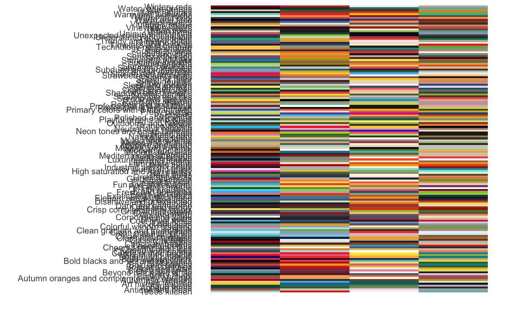
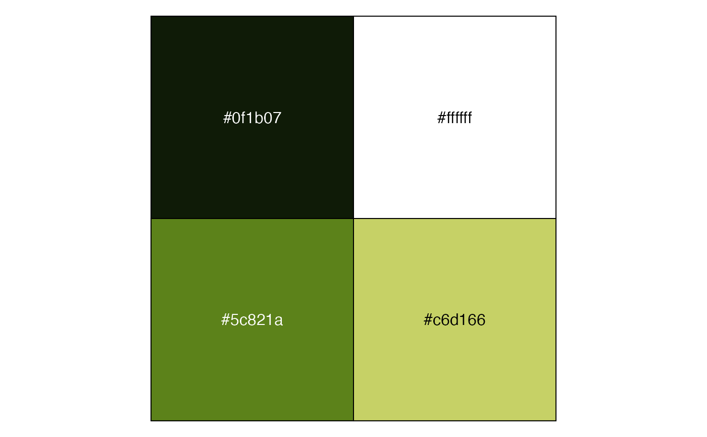
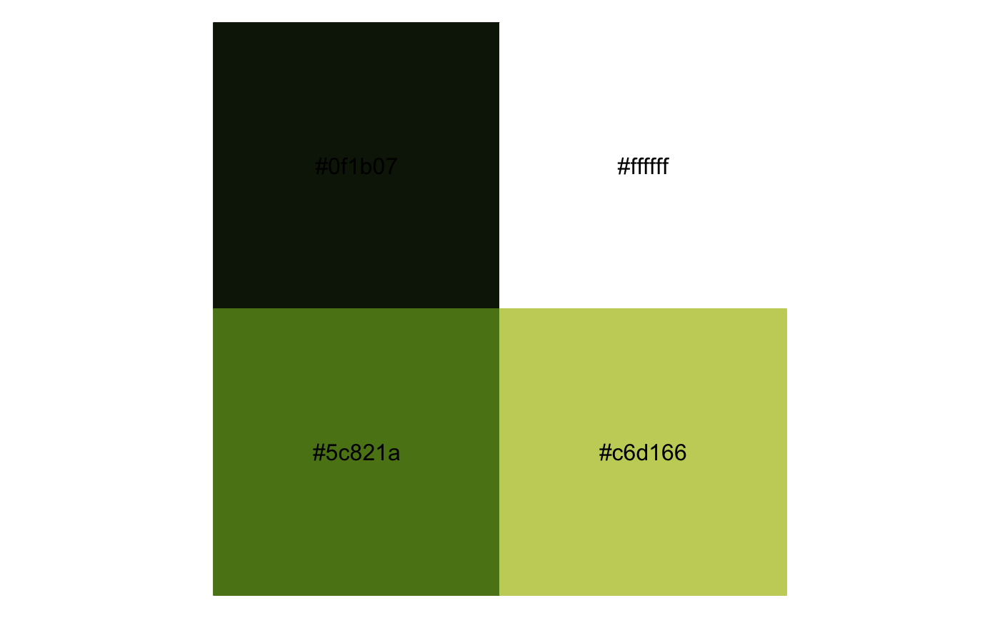

150+ color palettes from canva.com. See canva_palettes.
canva_pal(palette = "Fresh and bright")
Arguments
| palette | Palette name. See the names of |
|---|
Value
A function that takes a single value, the number of colors to use.
Examples
require("ggplot2") require("purrr")#>#> #>#> #> #>#> #> #>require("tibble")#>require("scales") canva_df <- map2_df(canva_palettes, names(canva_palettes), ~ tibble(colors = .x, .id = seq_along(colors), palette = .y)) ggplot(canva_df, aes(y = palette, x = .id, fill = colors)) + geom_raster() + scale_fill_identity(guide = FALSE) + theme_minimal() + theme(panel.grid = element_blank(), axis.text.x = element_blank()) + labs(x = "", y = "")